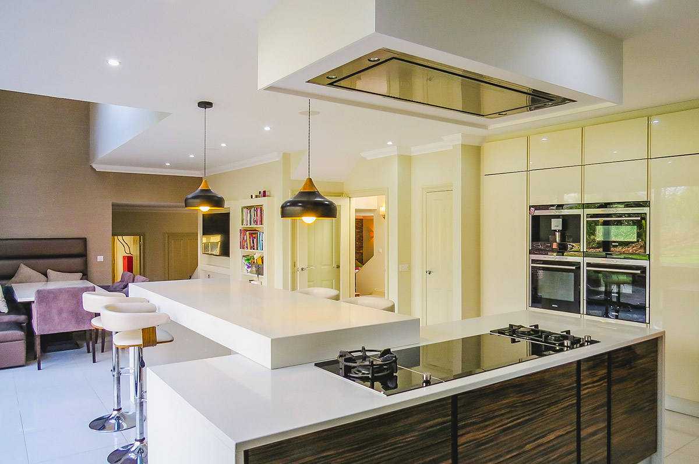

Darcy Construction · Romsey, Hampshire
Building trusted relationships and exceptional projects since 1999.
Professional construction delivery with the personal commitment of a trusted regional partner.
Selected projects
View all projects More work, carefully considered.
Our expertise
Clear routes through different settings.
Why clients choose Darcy
Confidence built into the relationship.
Established since 1999.
Senior people stay involved.
Transparent communication.
Trusted regional delivery.
Quality without compromise.